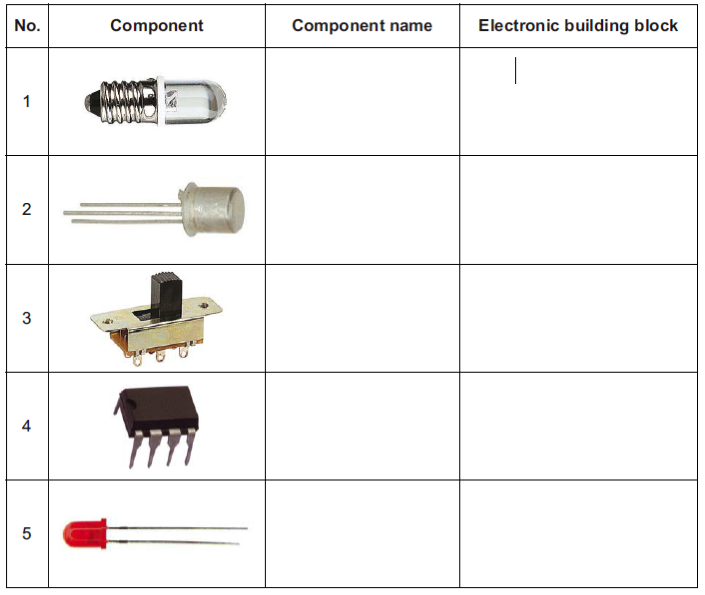
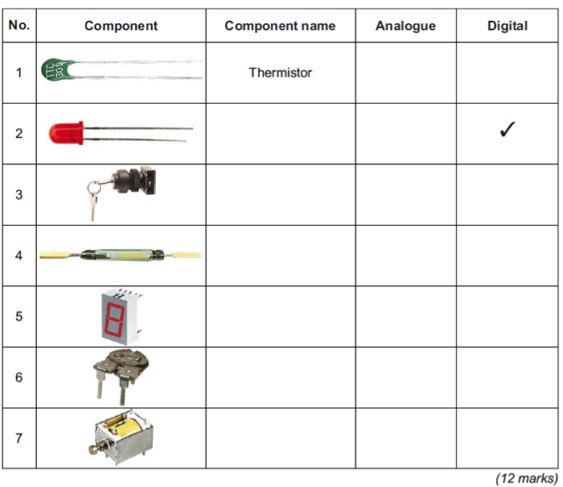
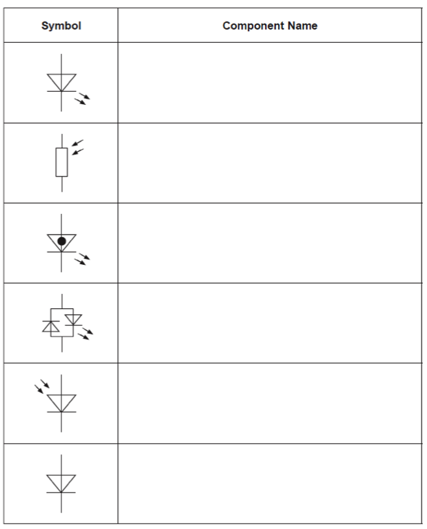
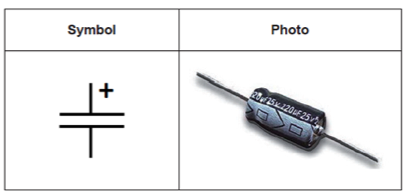

Basics
Table of Contents
1 Introduction
Voltage, Resistance and Current
- Before you can do anything to design and create new, original projects, you'll need to understand three fundamental electronic concepts.
- Voltage, is the difference in energy level between two points in a circuit, which will allow electrons to move through a conductor. The more difference in energy levels there is, the larger the amount of current can be drawn, and the larger item they can power. A basic red LED might only need 2.7V to run, whereas a laptop might need 24V, and a large electric motor moving a lift might need 415V to operate.
- Current is a measure of how many electrons pass a particular point in the circuit per second. Higher current (measured in Amps) means faster electron flow in the circuit. The process of moving electrons through a material generates frictional heat. If the wire used in a product is too thin, and too much current passes through it, the wire will melt! This is the principal on which fuses are made.
- Resistance is a measure of to what extent a material resists the flow of current in a circuit, and is measured in Ohms. Good conductors of electricity (like copper and gold) have very low resistance (1-2 Ω), and insulators (like rubber and plastic) have a high resistance (several million Ohms).
- An excellent explanation of this can be seen over at SparkFun.
Try it
- Resistors are components which are designed to provide carefully controlled amounts of resistance; ideal when designing circuits. The coloured bands on a resistor tell you what the value of the resistor is.
| Value | Colour | Mnemonic |
| 0 | Black | Bye |
| 1 | Brown | Bye |
| 2 | Red | Rosie |
| 3 | Orange | Off |
| 4 | Yellow | You |
| 5 | Green | Go |
| 6 | Blue | Bristol |
| 7 | Violet | Via |
| 8 | Grey | Great |
| 9 | White | Western |
- Get someone to give you 4 different resistors. Read the coloured bands to see what their values are, and then use the multimeter to confirm.
- Choosing the correct setting to measure DC Voltage (DCV) is the same as for measuring resistance. It doesn't really make a difference, but its more "correct" to use the black (common) probe for the negative end of the battery, and the red on the right.
Use the multimeter to discover how many volts each of the following produces:
- Square battery (PP3)
- AA battery
- AAA battery
- CR2032
One more thing…
- If you connect the positive terminal of a battery directly to the negative (e.g. with a wire), the battery gets very hot. The battery rapidly looses all its charge.
- What's happening is that because there is no "load" on the circuit (no components to pass through to slow the current flow), electrons are able to fly around the battery unimpeded, as fast as they possibly can.
- The ultra-fast movement of electrons generates a lot of heat. If the power source is one designed to carry a lot of current (e.g. a car battery) and it is shorted out, this can cause the battery to spark or even explode! This is why mechanics are very careful not to drop (metal) spanners on top of car batteries.
- Then this happens, this is called a short circuit, or "short".
2 Component Identification
Past Paper Questions
- Before you can start to read circuit diagrams (and go on to create new ones), you'll need to be able to identify the basic electronic component symbols. These questions are from actual past exam papers, so are a great way to build your skill set…
- June 2010, Q3. You are advised to spend about 20 minutes on this question. This question is about identifying components and their uses.
(a) For the following electronic components, give the component name and the electronic building block (input, process or output) it would be used for. (10 marks)

- June 2011, Q2. You should spend about 20 minutes on this question. This question is about identifying components and stating if they are analogue or digital.
(a) Give the Component name for the following electronic components, and tick the box to show whether a component is digital or analogue.

(b) Circle the method that MP3 players use to store music tracks. Analogue Digital FER Logic (1 mark)
(c) Clocks can have either analogue or digital displays to show the time. 2 (c) (i) Sketch a clock with an analogue display. (1 mark)
2 (c) (ii) Sketch a clock with a digital display. (1 mark)
(d) Electronic data can be recorded and stored in either digital or analogue format.
2 (d) (i) Give one advantage of recording data in a digital format. (2 marks)
2 (d) (ii) Give one advantage of recording data in an analogue format. (2 marks)
June 2012, Q5b. This question is about a simple coffee vending machine. The hot water valve is controlled by the coffee vending machine control system. Name the most suitable component to operate the valve. (1 mark)
June 2012, Q6. You are advised to spend about 15 minutes on this question. This question is about components. (a) Identify the following component symbols. (6 marks)

June 2012, Q6c. Name this component. (2 marks)
